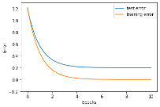
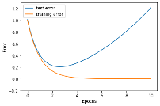

Learning Process in Neural Network¶
ក្នុងអត្ថបទមុន យើងបានដឹងរួចមកហើយថាដោយការផ្លាស់ប្តូរតម្លៃនៃប៉ារ៉ាម៉ែត្រនៃFNN (Feedforward Neural Network) អាចឱ្យយើងបង្ហាញពីទំនាក់ទំនងផ្សេងៗនៃទិន្នន័យដែលយើងមាន។ ចំណុចសំខាន់ក្នុងការកំណត់តម្លៃនៃប៉ារ៉ាម៉ែត្រគឺការស្វែងរកតម្លៃណាដែលសាកសមបំផុតក្នុងការបង្កើតបានជាបណ្តាញFNNដែលអាចពណ៌នាទំនាក់ទំនងក្នុងសំណុំទិន្នន័យសម្រាប់រៀន។ ការកំណត់តម្លៃនៃប៉ារ៉ាម៉ែត្រដោយផ្អែកលើសំណុំទិន្នន័យសម្រាប់រៀន ហៅថា ដំណើរការរៀន(Learning Process)។ មានវិធីសាស្រ្តច្រើនដែលត្រូវបានប្រើក្នុងដំណើរការរៀននៃFNN។ វិធីសាស្រ្តកំណត់តម្លៃនៃប៉ារ៉ាម៉ែត្រដោយវិធីគណនាច្រំដែលលើតម្លៃលេខតាមប្រមាណវិធីងាយៗគឺ Stochastic Gradient Descent (SGD)។
វិធីសាស្រ្ត Gradient Descent¶
ដូចដែលបានបង្ហាញក្នុងអត្ថបទមុន ប៉ារ៉ាម៉ែត្រដែលសាកសមបំផុតក្នុងការបង្កើតបានជាបណ្តាញFNNដែលអាចពណ៌នាទំនាក់ទំនងក្នុងសំណុំទិន្នន័យសម្រាប់រៀន គឺជាតម្លៃណាដែលធ្វើឱ្យអនុគមន៍កម្រិតលម្អៀងរវាងលទ្ធផលពីFNNនិងទិន្នន័យក្នុងសំណុំសម្រាប់រៀនតូចបំផុត។ ហេតុនេះគោលដៅរបស់យើងក្នុងដំណាក់កាលរៀននៃNeural Network គឺចង់កំណត់ប៉ារ៉ាម៉ែត្រនៃFNNដែលធ្វើឱ្យអនុគមន៍កម្រិតលម្អៀងមានតម្លៃតូចបំផុត ពោលគឺតម្លៃផលបូកការេនៃលម្អៀងក្នុងករណីនៃចំណោទតម្រែតម្រង់ ឬ Cross Entropyក្នុងករណីចំណោទចំណាត់ថ្នាក់ក្រុម មានតម្លៃតូចបំផុត។
Regression∶
គោលគំនិតក្នុងGradient Descent គឺផ្លាស់ប្តូរតម្លៃនៃប៉ារ៉ាម៉ែត្របន្តិចម្តងៗទៅតាមទិសដៅដែលធ្វើឱ្យតម្លៃនៃអនុគមន៍កម្រិតលម្អៀងមានការថយចុះ។ អ្នកអាចធ្វើការប្រដូចវិធីនេះទៅនឹងការចុះជំរាលឬចុះពីទីភ្នំដោយរំកិលខ្លួនអ្នកបន្តិចម្តងៗទៅកាន់ទីដែលទាបជាងកន្លែងដែលអ្នកនៅ។ ពេលដែលអ្នករំកិលខ្លួនដល់ទីដែលលែងមានបម្រែបម្រួលនៃរយៈកម្ពស់ អ្នកអាចសន្និដ្ឋានបានថាអ្នកដល់ទីដែលទាបបំផុតហើយ។ ដូចគ្នានេះដែរ នៅក្នុងវិធីសាស្រ្តGradient Descent តាមលក្ខណៈគណិតវិទ្យានៃ gradient (តម្លៃដេរីវេនៃអនុគមន៍ត្រង់ចំនុចណាមួយ) តម្លៃgradientត្រង់ចំណុចណាមួយគឺជាតម្លៃមេគុណប្រាប់ទិសនៃខ្សែកោងត្រង់ចំណុចនោះហើយក៏ជាតម្លៃធំបំផុតនៃបម្រែបម្រួលតម្លៃអនុគមន៍ពេលអ្នកធ្វើបម្រែបម្រួលលើអថេរមិនអាស្រ័យ។
ពេលនេះ យើងពិនិត្យលើការគណនាក្នុងវិធីសាស្រ្ត Gradient Descent។
យើងសិក្សា លើ ករណីសំណុំទិន្នន័យសម្រាប់រៀន \(\mathcal{D}=\left\{\left(\pmb{x}_1,\pmb{t}_1\right),\ldots,\left(\pmb{x}_N,\pmb{t}_N\right)\right\} \)និងអនុគមន៍ កម្រិត លម្អៀង \(E\left(\pmb{w}\right)\) ពោលគឺ ក្នុងករណីនៃចំណោទតម្រែតម្រង់
និងក្នុងករណីនៃចំណោទចំណាត់ថ្នាក់ច្រើនក្រុម
។ គោលដៅរបស់យើងគឺកំណត់តម្លៃនៃប៉ារ៉ាម៉ែត្រ\(\pmb{w}\) ដែលធ្វើអប្បបរមាកម្មលើ\(E\left(\pmb{w}\right)\) ។
សន្មតថាអនុគមន៍នេះយកតម្លៃអប្បបរមាត្រង់ចំណុច \(\pmb{w}^\ast\in\mathbb{R}^M\) ។ វិធីសាស្រ្ត Gradient Descent អាចឱ្យយើងគណនាតម្លៃ(ប្រហែល)នៃ \(\pmb{w}^\ast\)បានដោយចាប់ផ្តើមពីតម្លៃ\(\pmb{w}^{\left(0\right)}\)ណាមួយ រួចធ្វើការផ្លាស់ប្តូរតម្លៃនេះតាមការគណនាដូចខាងក្រោម។
នៅទីនេះ\(t=0,1,\ldots\) គឺជាលេខរៀងនៃការផ្លាស់ប្តូរតម្លៃអថេរ\(\pmb{x}\)។ \(\mathbf{\nabla}E\left(\pmb{w}\right)\) គឺជាដេរីវេដោយផ្នែកនៃអនុគមន៍\(E\) ធៀបនឹងអថេរ \(\pmb{w}\) ឬហៅថា gradient ។ \(\eta_t \)គឺជាកម្រិតនៃការផ្លាស់ប្តូរតម្លៃអថេរដោយគ្រប់គ្រងលើឥទ្ធិពលនៃតម្លៃgradient។ \(\eta_t\) ត្រូវបានហៅថាជា អត្រារៀនឬ learning rate។ជាទូទៅតម្លៃនៃ\(\eta_t\) ត្រូវបានកំណត់យកចន្លោះ០និង១ដោយតម្លៃយ៉ាងតូច។
យើងអាចកំណត់លក្ខខណ្ឌសម្រាប់បញ្ចប់ការផ្លាស់ប្តូរតម្លៃនៃអថេរបាន ដោយយកពេលដែលតម្លៃដាច់ខាតនៃ gradient យកតម្លៃសូន្យឬក្បែរសូន្យ។
វិធីសាស្រ្ត Stochastic Gradient Descent (SGD)¶
ការធ្វើបរមាកម្មលើតម្លៃអនុគមន៍ដោយប្រើ Gradient Descent តម្លៃអនុគមន៍កម្រិត លម្អៀងនៃគ្រប់ទិន្នន័យទាំងអស់ \(E\left(\pmb{w}\right)\) ក្នុងសំណុំទិន្នន័យសម្រាប់រៀន(training data) ត្រូវបានធ្វើអប្បបរមាកម្ម។ ទាំងក្នុងករណីចំណោទតម្រែតម្រង់(Regression) និងចំណោទចំណាត់ថ្នាក់ក្រុមទិន្នន័យ(Classification) អនុគមន៍កម្រិតលម្អៀងនៃគ្រប់ទិន្នន័យអាចសរសេរបានជាផលបូកនៃគ្រប់តម្លៃកម្រិតលម្អៀងក្នុងករណីគម្រូសម្រាប់រៀននិមួយៗ\(E_n\left(\pmb{w}\right)\)។
ការផ្លាស់ប្តូរតម្លៃនៃប៉ារ៉ាម៉ែត្រដូចបានបង្ហាញក្នុងGradient Descent ដោយប្រើអនុគមន៍កម្រិតលម្អៀងនៃគ្រប់ទិន្នន័យទាំងអស់ \(E\left(\pmb{w}\right)\) ហៅថា ការរៀនជាក្រុមជាបាច់(batch learning)។ផ្ទុយពីនេះ វិធីសាស្រ្តនៃការធ្វើអប្បបរមាអនុគមន៍កម្រិតលម្អៀងដោយធ្វើការផ្លាស់ប្តូរតម្លៃនៃប៉ារ៉ាម៉ែត្រដោយប្រើគម្រូសម្រាប់រៀនម្តងមួយៗនិងតម្លៃអនុគមន៍កម្រិតលម្អៀងលើគម្រូនោះ\( E_n\left(\pmb{w}\right)\)ហៅថា stochastic gradient descent(SGD)។ ក្នុងវិធីSGD គម្រូទិន្នន័យសម្រាប់រៀន(training sample) ម្តងមួយៗ ត្រូវបានជ្រើសយកដោយចៃដន្យដើម្បីគណនា gradient នៃអនុគមន៍\(E_n\left(\pmb{w}\right) \)រួចធ្វើការផ្លាស់ប្តូរតម្លៃប៉ារ៉ាម៉ែត្រតែម្តង ដោយមិនចាំបាច់ធ្វើការបូកសរុបគ្រប់ទិន្នន័យដែលមាននោះឡើយ។
ដូចដែលអ្នកអាចធ្វើការកត់សម្គាល់បាន ដោយប្រើgradient descent ពេលខ្លះយើងអាចនឹងទទួលបានតម្លៃប៉ារ៉ាម៉ែត្រដែលធ្វើឱ្យតម្លៃអនុគមន៍កម្រិតលម្អៀងធ្លាក់ចុះទៅក្នុងទីតាំងដែលជាបរមាធៀបតែមិនមែនជាកន្លែងអប្បបរមាពិតប្រាកដប្រសិនបើទីតាំងនៃការចាប់ផ្តើមរបស់អ្នកមិនប្រសើរ។ ប៉ុន្តែជាមួយ SGD ដោយសាររាល់ការផ្លាស់ប្តូរទិន្នន័យ គម្រូទិន្នន័យនិមួយៗត្រូវបានជ្រើសរើសដោយចៃដន្យ ហេតុនេះភាពប្រថុយប្រថាននៃការធ្លាក់ចូលទៅក្នុងអប្បបរមាធៀបអាចត្រូវបានដោះស្រាយមួយកម្រិត។
ផ្ទុយពី ការរៀនជាក្រុមជាបាច់(batch learning) ការរៀនដោយប្រើវិធីសាស្រ្តSGD ត្រូវបានហៅថា ការរៀនអនឡាញ(online learning)។ ក្រៅពីនេះ ការរៀនដោយប្រើវិធីសាស្រ្តផ្លាស់ប្តូរប៉ារ៉ាម៉ែត្រដូចSGD ប៉ុន្តែជំនួសការរើសយកគម្រូទិន្នន័យម្តងមួយៗ ការរើសយកទិន្នន័យមួយចំនួន\((<N)\)សម្រាប់ប្រើគណនាgradient ក៏ត្រូវបានអនុវត្តដែរ។ ក្នុងករណីនេះគេហៅថា ការរៀនជាក្រុមតូចជាបាច់តូច(minibatch learning)។ ក្នុងការរៀនជាក្រុមតូច ការផ្លាស់ប្តូរប៉ារ៉ាម៉ែត្រត្រូវធ្វើឡើងដូចខាងក្រោម។
សមត្ថភាពទូទៅ(Generalization Performance) និងស្ថានភាពរៀនហួសកំរិត(Overfitting)¶
តាមការរៀបរាប់ពីដំណើរការរៀនក្នុងចំណុចខាងលើ យើងបានសិក្សាពីការកំណត់ប៉ារ៉ាម៉ែត្រ ណាដែលធ្វើឱ្យតម្លៃនៃអនុគមន៍កម្រិតលម្អៀងចំពោះសំណុំទិន្នន័យសម្រាប់រៀនមានតម្លៃតូចបំផុត។ប៉ុន្តែតាមពិតទៅក្រៅពីសំណុំទិន្នន័យសម្រាប់រៀន យើងក៏ចង់បានបណ្តាញFNNដែលធ្វើឱ្យកម្រិតលម្អៀងក្នុងករណីទិន្នន័យផ្សេងក្រៅពីទិន្នន័យសម្រាប់រៀនមានតម្លៃតូចផងដែរ។
កម្រិតលម្អៀងចំពោះសំណុំទិន្នន័យសម្រាប់រៀនហៅថា កម្រិតលម្អៀងពេលរៀន(training error) និងតម្លៃសង្ឍឹមគណិតនៃកម្រិតលម្អៀងចំពោះសំណុំទិន្នន័យទាំងអស់(population)ទាំងទិន្នន័យដែលបានរៀននិងទាំងទិន្នន័យដែលមិនមានក្នុងសំណុំសម្រាប់រៀនហៅកម្រិតលម្អៀងទូទៅ (generalization error)។ គោលដៅយើងចង់បានបណ្តាញដែលផ្តល់ឱ្យនូវកម្រិតលម្អៀងទូទៅតូចបំផុត ប៉ុន្តែដោយសារកម្រិតលម្អៀងទូទៅជាតម្លៃសង្ឃឹមគណិតលើសំណុំទិន្នន័យទាំងអស់ នោះការគណនាដោយផ្ទាល់មិនអាចធ្វើបានឡើយ។ ហេតុនេះ ជំនួសឱ្យការសិក្សាលើសំណុំទិន្នន័យទាំងអស់គេសិក្សាលើសំណុំគម្រូទិន្នន័យមួយផ្នែកដែលមិនមានក្នុងសំណុំសម្រាប់រៀន។ សំណុំនេះហៅថា សំណុំទិន្នន័យសម្រាប់វាយតម្លៃ(test data set) ហើយកម្រិតលម្អៀងនៃសំណុំទិន្នន័យសម្រាប់វាយតម្លៃនេះហៅថា កម្រិតលម្អៀងពេលវាយតម្លៃ(test error)។ ពោលគឺជំនួសឱ្យគោលដៅនៃអប្បបរមាកម្មលើកម្រិតលម្អៀងទូទៅយើងសិក្សាលើអប្បបរមាកម្មលើកម្រិតលម្អៀងពេលវាយតម្លៃវិញ។
រូបខាងក្រោមបង្ហាញពីបម្រែបម្រួលនៃអនុគមន៍កម្រិតលម្អៀងនៅពេលប៉ារ៉ាម៉ែត្រត្រូវបានផ្លាស់ប្តូរក្នុងដំណើរការរៀន។ ក្រាបប្រភេទនេះហៅថាខ្សែកោងបង្ហាញដំណើរការរៀន(learning curve)។ ជាទូទៅអនុគមន៍កម្រិតលម្អៀងពេលរៀនថយនៅពេលដំណើរការរៀនត្រូវបានអនុវត្ត។ ផ្ទុយទៅវិញ អនុគមន៍កម្រិតលម្អៀងពេលវាយតម្លៃថយចុះដូចអនុគមន៍កម្រិតលម្អៀងពេលរៀនដែរនៅដំណាក់កាលដំបូង ប៉ុន្តែនៅត្រង់ចំណុចណាមួយ វាក៏ចាប់ផ្តើមមានគម្លាតរវាងករណីរៀននិងការវាយតម្លៃ។ ក្នុងករណីដែលមិនល្អ នៅពេលដែលដំណើរការរៀនបន្តទៅមុខ អនុគមន៍កម្រិតលម្អៀងពេលរៀនថយ ឯកម្រិតលម្អៀងវាយតម្លៃចាប់ផ្តើមកើនឡើង។ ករណីបែបនេះបង្ហាញក្នុងរូបទី២ ផ្នែកខាងស្តាំ។ ស្ថានភាពដែលកម្រិតលម្អៀងពេលរៀនថយចុះទាបខ្លាំងខណៈកម្រិតលម្អៀងវាយតម្លៃកើនធំខ្លាំងហៅថា ស្ថានភាពរៀនហួសកំរិត។ ស្ថានភាពបែបនេះអាចនិយាយបែបងាយបានថា បណ្តាញអាចផ្តល់លទ្ធផលបានល្អចំពោះតែទិន្នន័យណាដែលខ្លួនធ្លាប់បានរៀន រីឯទិន្នន័យដែលមិនមានក្នុងសំណុំសម្រាប់រៀន បណ្តាញមិនអាចផ្តល់លទ្ធផលបានល្អឡើយ។
ក្នុងការដោះស្រាយបញ្ហាបែបនេះមានតិចនិចជាច្រើនត្រូវបានស្រាវជ្រាវនិងអនុវត្ត។ យើងនឹងណែនាំលម្អិតក្នុងអត្ថបទខាងក្រោយ ប៉ុន្តែដំណោះស្រាយងាយគឺការបញ្ឃប់ដំណើរការរៀនមុនកំណត់(early stopping) ដោយបញ្ឃប់ដំណើរការរៀនមុនពេលកម្រិតលម្អៀងវាយតម្លៃកើនឡើង។


សិក្សាករណីបំណែងចែកច្រើនថ្នាក់ដោយFNN¶
MNIST DATASET¶
from keras.datasets import mnist
import numpy as np
import matplotlib.pyplot as plt
(Xtrain, ttrain), (Xtest, ttest) = mnist.load_data()
print('X_train: ' + str(Xtrain.shape))
print('t_train: ' + str(ttrain.shape))
print('X_test: ' + str(Xtest.shape))
print('t_test: ' + str(ttest.shape))
for i in range(9):
plt.subplot(330 + 1 + i)
plt.imshow(Xtrain[i], cmap=plt.get_cmap('gray'))
plt.show()
X_train: (60000, 28, 28)
t_train: (60000,)
X_test: (10000, 28, 28)
t_test: (10000,)
X_train = Xtrain.reshape(-1,28*28)/255.
X_test = Xtest.reshape(-1,28*28)/255.
t_train = np.eye(10)[ttrain]
t_test = np.eye(10)[ttest]
print('Xtrain: ' + str(X_train.shape))
print('Ytrain: ' + str(t_train.shape))
print('Xtest: ' + str(X_test.shape))
print('Ytest: ' + str(t_test.shape))
Xtrain: (60000, 784)
Ytrain: (60000, 10)
Xtest: (10000, 784)
Ytest: (10000, 10)
Feedforward Neural Network¶
Using Numpy¶
def sigmoid(x):
return 1 / (1 + np.exp(-x))
def sigmoid_grad(x):
return (1.0 - sigmoid(x)) * sigmoid(x)
def softmax(x):
x = x - np.max(x, axis=-1, keepdims=True) # To deal with overflow
return np.exp(x) / np.sum(np.exp(x), axis=-1, keepdims=True)
def cross_entropy_error(y, t):
batch_size = y.shape[0]
t = t.argmax(axis=1)
return -np.sum(np.log(y[np.arange(batch_size), t] + 1e-7)) / batch_size
class SimpleFNN:
def __init__(self, input_size, hidden_size, output_size):
self.params = {}
self.params['W1'] = np.random.randn(input_size, hidden_size)
self.params['b1'] = np.random.randn(hidden_size)
self.params['W2'] = np.random.randn(hidden_size, output_size)
self.params['b2'] = np.random.randn(output_size)
def predict(self, x):
W1, W2 = self.params['W1'], self.params['W2']
b1, b2 = self.params['b1'], self.params['b2']
u1 = np.dot(x,W1) + b1
z1 = sigmoid(u1)
u2 = np.dot(z1,W2) + b2
y = softmax(u2)
return y
def loss(self, x, t):
y = self.predict(x)
return cross_entropy_error(y,t)
def accuracy(self, x, t):
y = self.predict(x)
y = np.argmax(y, axis=1)
t = np.argmax(t, axis=1)
accuracy = np.sum(y == t)/float(x.shape[0])
return accuracy
def gradient(self, x, t):
W1, W2 = self.params['W1'], self.params['W2']
b1, b2 = self.params['b1'], self.params['b2']
grads = {}
batch_num = x.shape[0]
a1 = np.dot(x, W1) + b1
z1 = sigmoid(a1)
a2 = np.dot(z1, W2) + b2
y = softmax(a2)
dy = (y - t) / batch_num
grads['W2'] = np.dot(z1.T, dy)
grads['b2'] = np.sum(dy, axis=0)
dz1 = np.dot(dy, W2.T)
da1 = sigmoid_grad(a1) * dz1
grads['W1'] = np.dot(x.T, da1)
grads['b1'] = np.sum(da1, axis=0)
return grads
train_errors = []
test_errors = []
train_accs = []
test_accs = []
iter_num = 10000
train_size = X_train.shape[0]
batch_size = 100
learning_rate = 0.1
iter_per_epoch = max(train_size/batch_size, 1)
fnn = SimpleFNN(input_size=28*28, hidden_size=100, output_size=10)
for i in range(iter_num):
batch_mask = np.random.choice(train_size, batch_size)
batch_mask_test = np.random.choice(X_test.shape[0], batch_size)
X_batch = X_train[batch_mask]
t_batch = t_train[batch_mask]
grad = fnn.gradient(X_batch, t_batch)
for key in ('W1','b1','W2','b2'):
fnn.params[key] -= learning_rate * grad[key]
error = fnn.loss(X_batch, t_batch)
train_errors.append(error)
test_errors.append(fnn.loss(X_test[batch_mask_test], t_test[batch_mask_test]))
if i%iter_per_epoch == 0:
train_acc = fnn.accuracy(X_train, t_train)
test_acc = fnn.accuracy(X_test, t_test)
train_accs.append(train_acc)
test_accs.append(test_acc)
print("train acc, test acc : "+ str(train_acc) + ', '+ str(test_acc))
train acc, test acc : 0.06621666666666666, 0.0624
train acc, test acc : 0.7256666666666667, 0.7327
train acc, test acc : 0.8017333333333333, 0.805
train acc, test acc : 0.8347833333333333, 0.8387
train acc, test acc : 0.8522666666666666, 0.8528
train acc, test acc : 0.8653166666666666, 0.8643
plt.plot(np.array(list(range(len(train_accs)))),train_accs,label="train_accuracy")
plt.plot(np.array(list(range(len(test_accs)))),test_accs,label="test_accuracy")
plt.legend()
plt.xlabel("Epoch #")
plt.ylabel("Accuracy")
plt.show()
plt.plot(np.array(list(range(len(train_errors)))),train_errors,label="train_error")
plt.plot(np.array(list(range(len(test_errors)))),test_errors,label="test_error")
plt.legend()
plt.xlabel("Iteration #")
plt.ylabel("Error")
plt.show()
plt.plot(np.array(list(range(len(train_errors)))),train_errors,label="train_error")
plt.plot(np.array(list(range(len(test_errors)))),test_errors,label="test_error")
plt.legend()
plt.xlim([0,750])
plt.xlabel("Iteration #")
plt.ylabel("Error")
plt.show()